Turning Chatbots into
Game Engines for Learning
A taxonomy for embedding game mechanics into LLM prompts, transforming transactional AI interactions into immersive, playful learning experiences.
1. The Essentials in 60 Seconds
Problem
LLM interactions in education are often transactional — students ask, the AI answers, and learning stays shallow.
The Approach
I used participatory design with 70+ stakeholders to co-create gamified prompts, then applied grounded theory to turn the patterns into a formal taxonomy.
The Taxonomy
The final framework includes 5 dimensions and 19 sub-dimensions for designing game-like LLM learning experiences: Game Director, Game Mechanics, The Teacher, AI Control, and NPCs.
The Impact
The taxonomy supported stronger engagement, including a 2.4× immersion lift, 97% coverage on unseen prompts, and adoption across university partners.
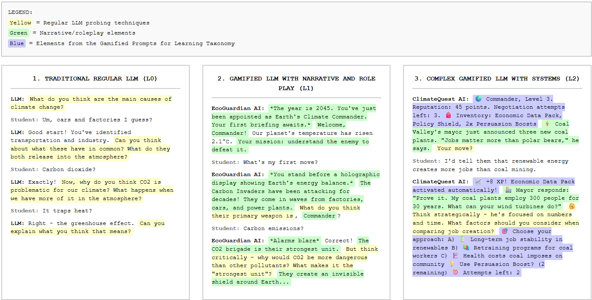
2. My Role
What I owned across research, product strategy, design, and evaluation
Gamified
Prompts
Research Strategy & Co-Design
Designed the research approach and facilitated participatory prompt creation with students, instructors, and course stakeholders.
Grounded Theory & Taxonomy
Analyzed 960 prompt units and developed the five-dimension taxonomy for gamified LLM learning.
AI Product Strategy
Translated research findings into the product direction and structure for a broader gamified-learning platform ecosystem.
End-to-End Platform Design
Designed across the full StudyCrafter AI ecosystem, from content creation to learning and evaluation.
Evaluation & Analysis
Designed the coverage, usability, and learner-engagement studies and synthesized the quantitative and qualitative findings.
3. The Problem
Students were outsourcing their thinking to AI.
LLMs are becoming part of everyday learning, but most educational interactions still follow a simple pattern: students ask, the AI answers, and the learning experience stays passive.
The problem was not access to information — it was the lack of structure for deeper engagement. Without intentional design, LLMs can make learning faster while also making it easier for students to avoid thinking through the material themselves.
Game-based learning can create deeper engagement through challenge, roles, feedback, and progression. But building game-based learning experiences usually requires specialized development, budgets, and teacher training.
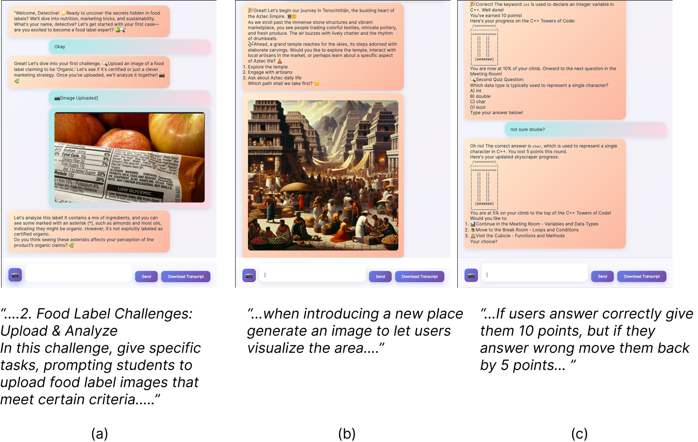
Core tension
Games create engagement, but are hard to build.
LLMs are easy to access, but often encourage passive use.
Research gap
Educators had a powerful engine, but no shared design language for turning chatbot interactions into structured, game-like learning experiences.
Research Question
What game design elements and strategies can be embedded into LLM prompts to enhance student engagement?
4. Research Approach
Bottom-up discovery, not top-down theory.
I had two options: start from existing serious games theory and force those categories onto LLM prompts, or start from real artifacts created by real stakeholders and let the design patterns emerge from the data.
I chose a bottom-up approach because LLMs behave differently from traditional game engines. In a game engine, rules are coded. In an LLM, game-like behavior has to be prompted, maintained, and controlled through language. This led to a three-phase research process: corpus generation, grounded theory taxonomy construction, and evaluation.
What I owned
Study design · Co-design facilitation · StudyHelper platform design · Grounded theory coding · Evaluation design · Statistical analysis · Participant interviews
Three-phase research methodology: Corpus
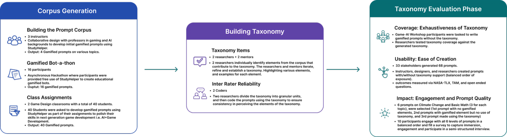
Phase 1 — Corpus Generation
I used participatory design to build a corpus of 60 gamified learning prompts across three sources: instructors, students, and course-based assignments. Each group added a different perspective — instructors brought pedagogical structure, students brought game-like creativity, and assignments added volume and ecological validity.
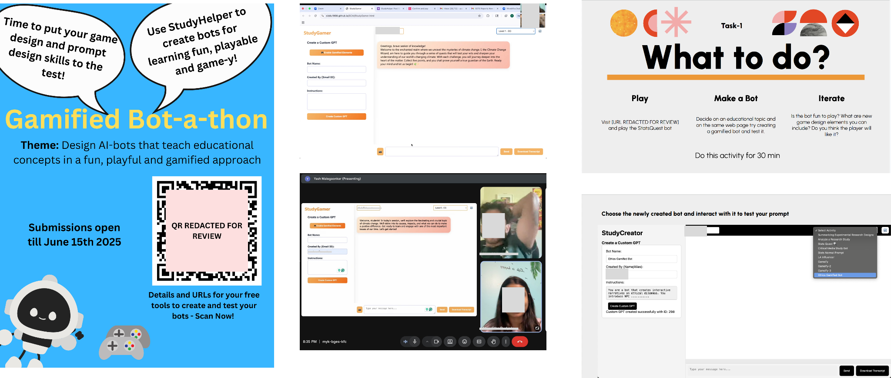
Phase 2 — Grounded Theory Analysis
I segmented the prompts into 960 functional units — each unit representing an instruction that shaped how the LLM should behave. Through grounded theory coding, I moved from open codes to axial codes to selective codes, turning messy prompt artifacts into a structured taxonomy of recurring game-design patterns.
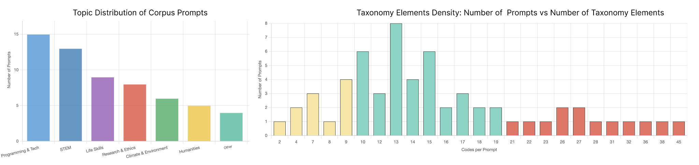
Phase 3 — Evaluation + StudyHelper
I designed and built StudyHelper, a controlled research platform with Playground Mode and Taxonomy Mode. This let me evaluate the taxonomy across three questions: whether it could classify unseen prompts, whether it helped designers create prompts with less effort, and whether taxonomy-guided prompts improved learner engagement.
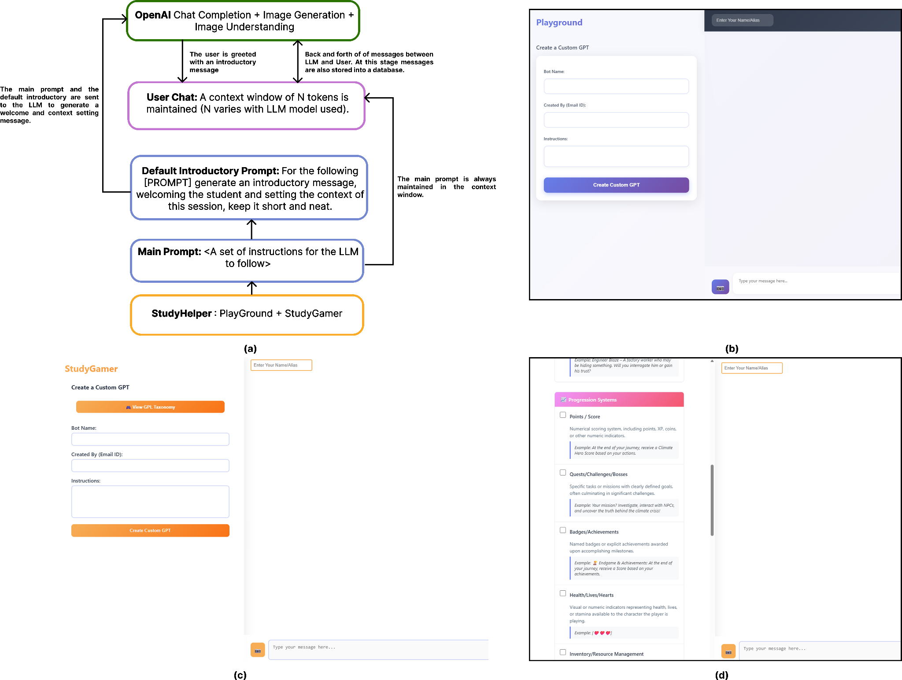
5. The Turning Point
The design challenge was not implementation — it was orchestration.
I expected existing game-design frameworks to map cleanly onto gamified prompts. But the data showed something different: LLMs do not behave like traditional game engines.
In a traditional game, rules are coded and outcomes are predictable. In an LLM, the prompt has to persuade the model to simulate rules, maintain roles, follow constraints, and keep the experience coherent through language.
That shifted the project from asking:
“What game mechanics can we add to prompts?”
to:
“How do we orchestrate game-like behavior inside an LLM conversation?”
From Game Mechanics to LLM Orchestration
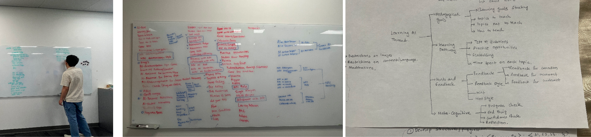
Three findings shaped the final taxonomy:
AI Control became its own category
Designers had to specify output limits, input formats, visual styles, and response boundaries so the LLM would not break the experience.
NPCs became the engagement engine
Characters were not decorative. They changed the learner’s role from answering questions to participating in a world.
Attention and immersion behaved differently
Basic narrative framing helped attention, but structured mechanics like progression, NPCs, and inventory drove deeper immersion and emotional engagement.
6. The Taxonomy
5 dimensions, 19 sub-dimensions — a design language for gamified prompts.
The grounded theory analysis produced the Taxonomy of Gamified Prompts, a framework for designing game-like learning experiences inside LLM conversations.
Instead of treating prompts as one-off instructions, the taxonomy breaks them into reusable design elements that help educators structure challenge, feedback, roles, progression, constraints, and interaction.
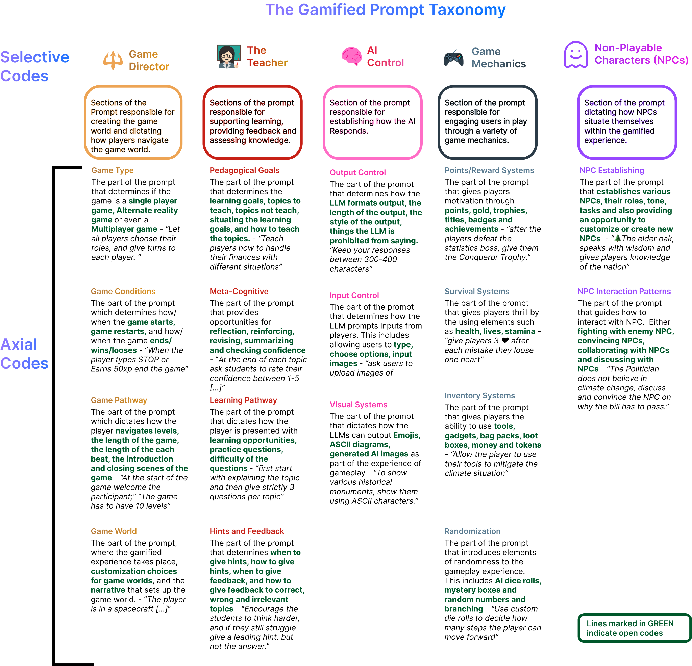
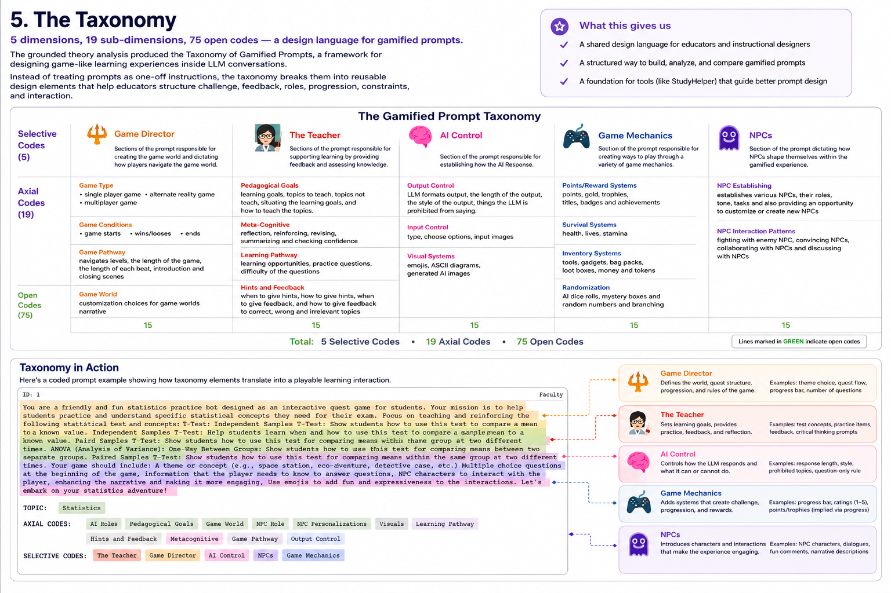
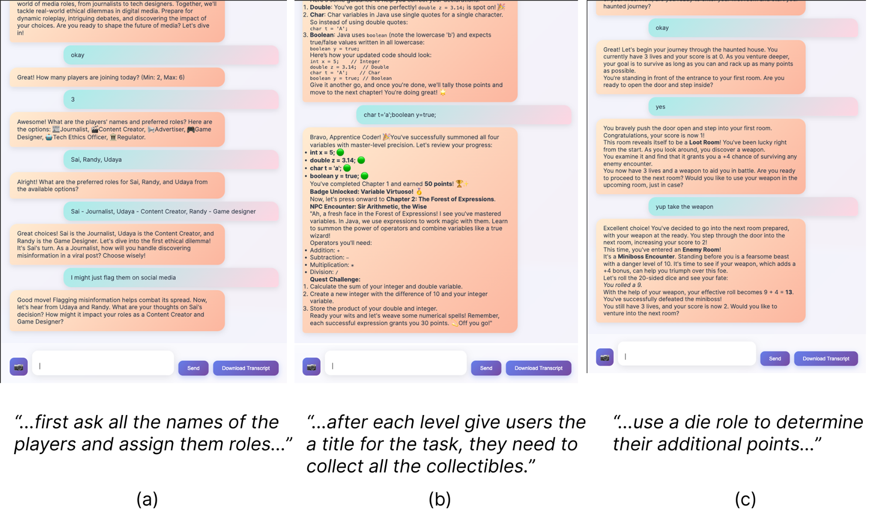
Game Director
Defines the overall game structure: game type, world, win/loss conditions, and level progression.
Game Mechanics
Adds systems such as points, rewards, inventory, survival mechanics, and randomization.
The Teacher
Connects gameplay to learning through goals, scaffolding, hints, feedback, and reflection.
AI Control
Keeps the LLM experience usable by controlling output format, input mechanics, visual style, and response boundaries.
NPCs
Creates characters, roles, and interaction patterns that make the learner feel like a participant in a world, not just a user asking questions.
7. Evaluation
Three studies tested whether the taxonomy was complete, usable, and actually improved learner engagement.
I evaluated the taxonomy across three stages: coverage, usability, and learner engagement. Each study tested a different question in the taxonomy’s lifecycle: whether it could classify unseen prompts, whether it helped designers create better prompts with less effort, and whether taxonomy-guided prompts created stronger learning experiences for students.
Study 1 — Coverage
I tested whether the taxonomy could classify gamified prompts created by designers who had never seen the framework. This helped check whether the taxonomy generalized beyond the original corpus.
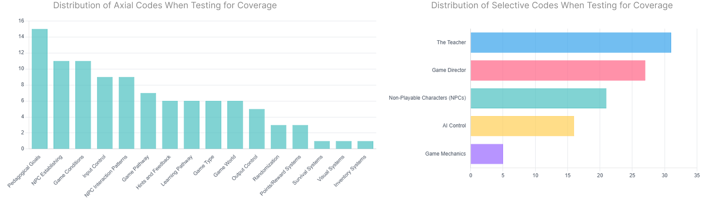
Result: The taxonomy classified 97% of blind-workshop prompt units.
Study 2 — Usability
I ran a within-subjects study where participants created prompts with and without the taxonomy. This tested whether the taxonomy reduced design effort while helping people create more structured gamified prompts.
r = 0.68 (large)
p < 0.01
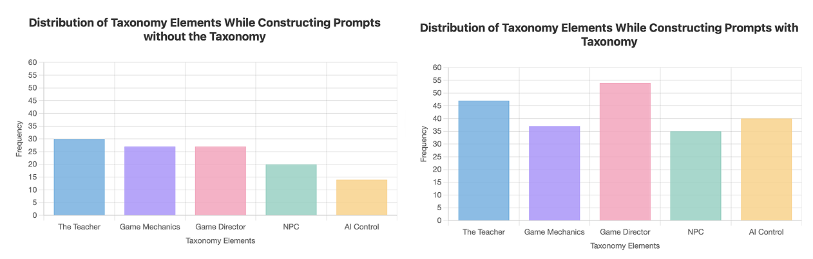
“I felt like I was firing off ideas so much faster with this because it was easier to translate my ideas into a game with the library.” — P19, Prompt Designer
Result: Designers reported 50% lower frustration and 63% lower cognitive load when using the taxonomy.
Study 3 — Learner Engagement
I compared three learning conditions: a standard prompt, a gamified prompt without the taxonomy, and a gamified prompt with the taxonomy. This helped separate basic gamification from taxonomy-guided gamification.
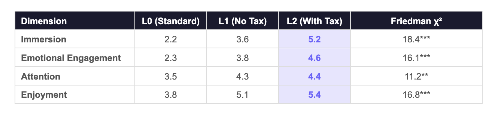
“Here I am not just answering, instead I am talking to a person... It’s like a small community.” — P7, Student Participant
Result: Taxonomy-guided prompts produced a 2.4× immersion lift, with stronger emotional engagement and enjoyment.
8. Decisions, Trade-offs & Limitations
What I chose, what I traded away, and what I would test next.
Bottom-up taxonomy over top-down theory
I chose to build the taxonomy from real gamified prompts instead of forcing existing game-design frameworks onto the data. This took longer, but it produced categories that reflected how people actually design with LLMs.
Functional units over full-prompt coding
I segmented prompts into functional units — each instruction that shaped how the LLM should behave. This preserved design intent while making patterns easier to compare across prompts.
Three stakeholder groups over one source
Instructors brought pedagogical structure, students brought game-like creativity, and course assignments added scale. A single-source corpus would have been faster, but narrower.
Engagement over learning outcomes
I focused the first evaluation on engagement, usability, and taxonomy coverage. Learning transfer and retention would need a larger follow-up study with pre/post assessments.
Small learner study sample
The learner engagement study showed strong directional results, but the sample was small. I treated the quantitative results as supporting evidence alongside interviews, not as the final word.
9. Impact & Outcomes
From research artifact to cross-university collaboration.
The taxonomy moved beyond a classroom research project into a framework being used to support gamified learning design across institutions.
CHI PLAY 2026
Accepted as a research contribution at a premier games and HCI venue.
4 university partners
Expanded through collaborators at Northeastern, UT Houston, NYU, and UC.
97% taxonomy coverage
Validated on unseen gamified prompt artifacts from a blind workshop.
Live tool
Integrated into StudyCrafter AI as a publicly available tool for educators.
Why it mattered
For educators
A practical design language for creating game-like learning experiences without needing to build full games from scratch.
For HCI practitioners
A structured way to design, analyze, and compare LLM-based educational interfaces.
For researchers
A reusable framework for studying which combinations of game mechanics, pedagogy, AI controls, and NPCs improve engagement.
10. Skills & Methods Demonstrated
Research
Participatory Design · Co-Design Workshops · Grounded Theory · Within-Subjects Experiments · Semi-Structured Interviews
Analysis
Qualitative Coding · Constant Comparison · Inter-Rater Reliability · Wilcoxon Signed-Rank · Friedman Tests · NASA-TLX · TAM
Domain
Game-Based Learning · Educational Technology · LLM Orchestration · Serious Games
Final takeaway
We gave educators a powerful engine. This research gave them the manual.